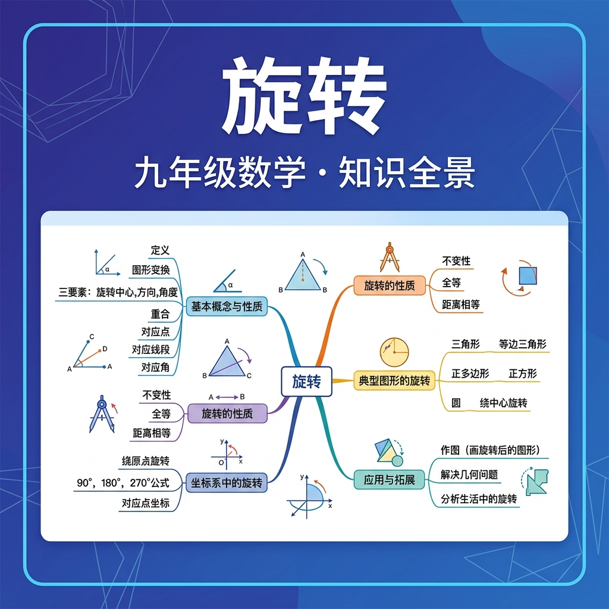

探索图形的旋转变换，掌握旋转的性质与作图方法
九年级数学 · 图形变换
🌀 问题引入：风车的叶片、摩天轮的座舱、时钟的指针……你注意到这些物体的运动方式了吗？它们都在围绕一个固定的点转动，这就是数学中的"旋转"变换！如果我把一个图形绕某个点转动一定角度，图形会变成什么样？
把一个图形绕着某一点 O 转动一个角度，这种图形变换叫做旋转，其中：
🔧 问题引入：已知△ABC和旋转中心O，如何精确画出它绕O旋转60°后的图形？很多同学会随手"转一转"，但这样往往不准确。让我们用尺规作图的方式来精确完成旋转！
🌸 问题引入：风车、雪花、太极图……这些美丽图案有什么共同点？它们都具有"旋转对称性"！当图形绕某点旋转一定角度后能与原图形重合，我们就说这个图形具有旋转对称性。
利用旋转的知识，完成以下综合任务：
已知△OAB中，OA=OB=3，∠AOB=45°。将△OAB绕O点依次旋转45°，共旋转7次，形成一个美丽的旋转图案。